Martins makalösa Korvstroganoff med ris.
Bilder på ingredienserna
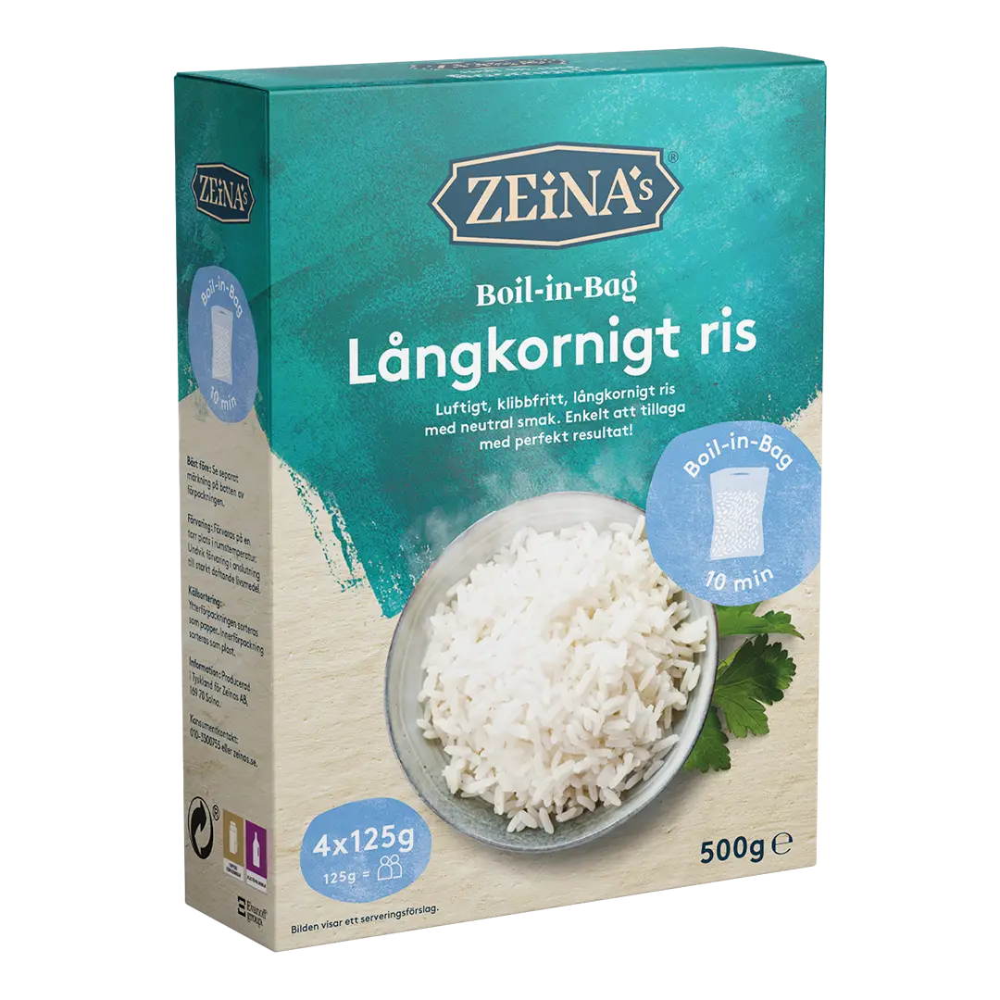
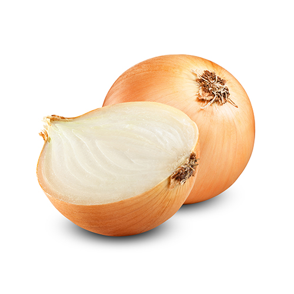
 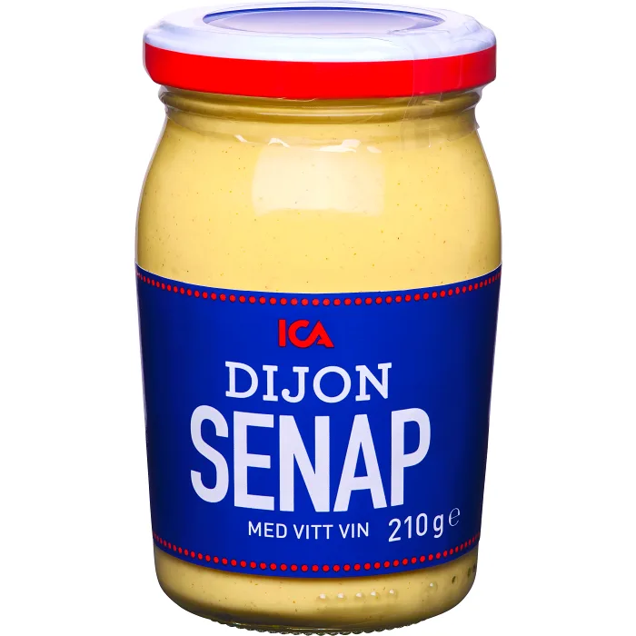
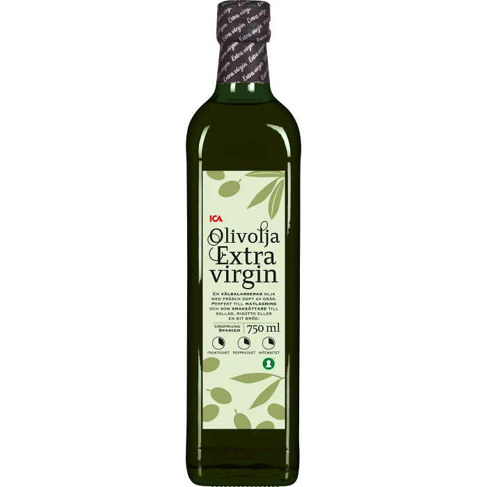
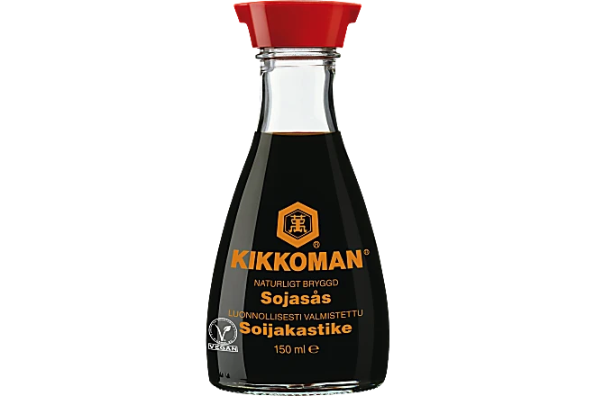
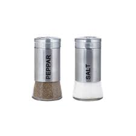
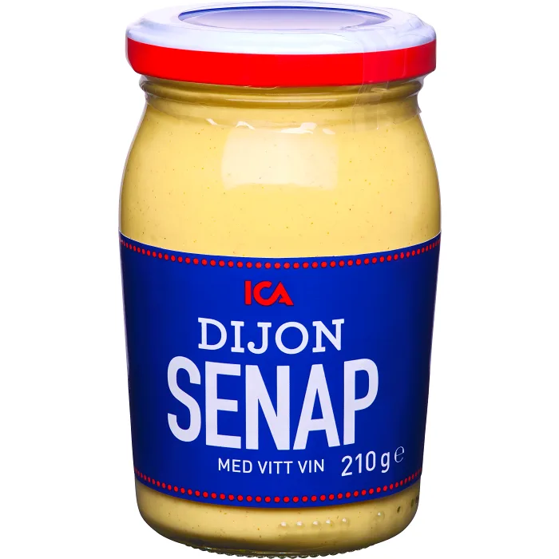
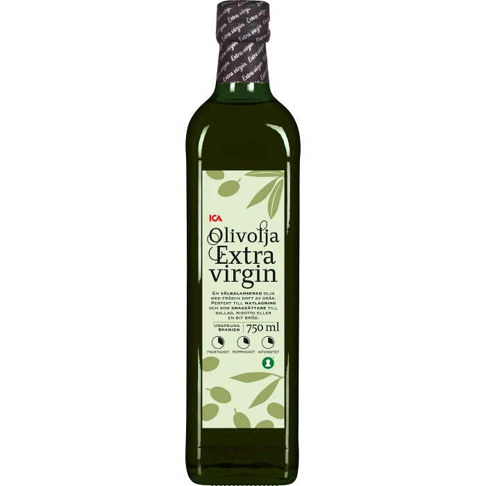
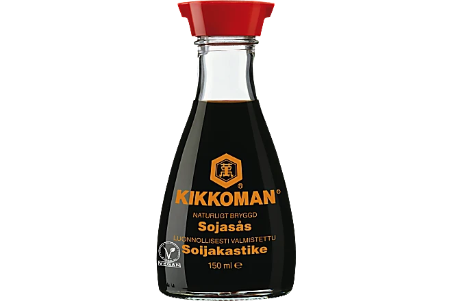
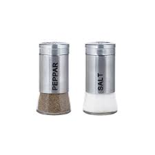
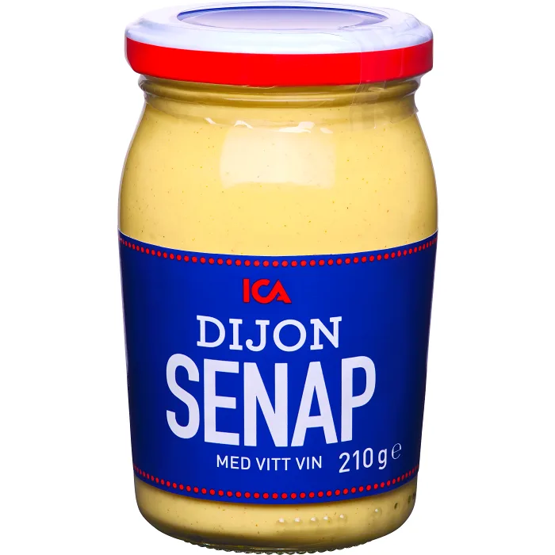
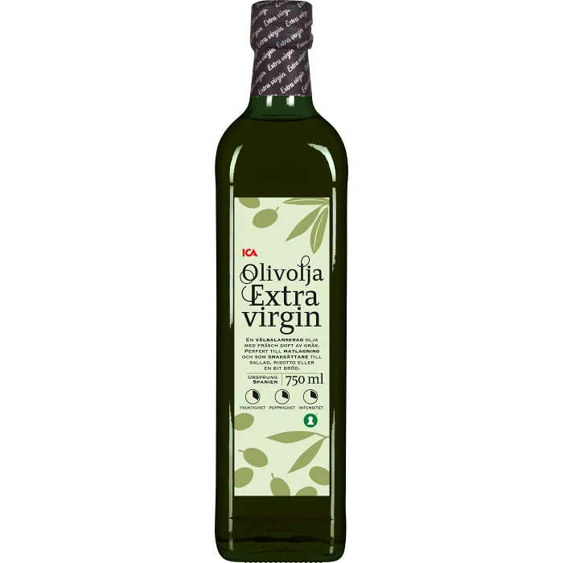
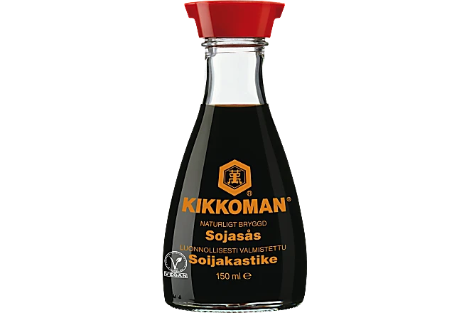
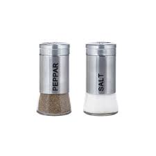Recept
- Koka riset enligt anvisningen på förpackningen.
- Skär korven i stavar. Skala och hacka löken.
- Stek korv och lök i oljan i en stekpanna ca 5 minuter. Tillsätt tomatpuré och fräs någon minut.
- Rör ner grädde, mjölk, soja och dijonsenap. Låt sjuda ca 5 minuter.
- Smaka av med peppar och ev salt.
- Till servering: Servera korvstroganoffen med ris och gärna vitkålssallad.